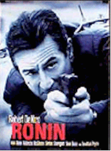
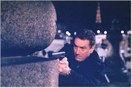
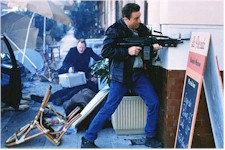

Contents | Features | Reviews | Books | Archives | Store |
 |
|
| Movie Credits | Buy It! |
Ronin
Review by Eddie Cockrell
Posted 25 September 1998
|  | Directed by John Frankenheimer Starring
Robert De Niro, Jean Reno, Screenplay by J.D. Zeik and Richard Weisz, |
"He's tough, your Yank," someone says of Robert De Niro's character and his ability to survive the numerous gun battles, car chases and double-crosses packed into the two hours of Ronin (more on that title later), and the same might well be said of the principals behind this new, out-of-nowhere action classic. Taut, taciturn and terrific, Ronin marks a defiant return to form for veteran director John Frankenheimer (The Manchurian Candidate, Seconds, "George Wallace,"), the retooling of De Niro into an international action star, and an audacious and triumphant revival of the kind of moody thrills found in French caper films of the 1960s and such 1970s American fare as The Seven-Ups and The Driver.
Working from the recommendations of a never-seen wheelchair-bound man, five specialists have been brought together in a Paris warehouse by Irish tactical strategist Dierdre (Natascha McElhone, The Devil's Own and The Truman Show) with the promise of a job. Detail-oriented Sam (De Niro) may or may not have studied at the CIA to master elite covert operations -- "I got my job through the New York Times," he quips curtly when asked -- while gravel-voiced Vincent (Jean Reno, The Professional) is a home-grown French location operative who can get any thing for anybody. Gregor (Stellan Skarsgård, Breaking the Waves and Good Will Hunting) probably learned electronic communication from the KGB, while weapons expert Spence (Sean Bean, GoldenEye) and driver Larry (Skipp Sudduth, Clockers) apparently come from less pedigreed backgrounds.
Their mission? Steal the distinctively shaped silver case chained to the wrist of -- who cares? They're being paid a lot to get it, and that's that ("my friend, I need the money," says one). After an early cash-for-guns swap goes awry, they regroup and begin planning in earnest.
As they pursue the mysterious case from Nice to Arles and back to Paris, cautious bonds begin to form and each man's character is glimpsed: Sam and Vincent have a distant but loose camaraderie ("what would I profit from your death?" asks the Frenchman in the film's closest approximation to tenderness), Spence is released for melting down under pressure, and Larry shows the most outward fear. It is only after the arrival of Dierdre's handler Seamus (Jonathan Pryce, Brazil and Tomorrow Never Dies) that things begin to spin out of control, involving the mysterious Jean-Pierre (Michel Lonsdale, The Day of the Jackal and Moonraker) and the larcenous Russian impressario Mikhi (Feodor Atkine, Sorcoress and Three Lives and Only One Death) in a furious scramble to possess the case and stay alive. Adding one final note of tension is Sam's never-articulated but nearly fatal fondness for Dierdre, who hasn't exactly been straight with him...
Though this may sound like tough-guy posturing on the page, a combination of canny writing and astonishing execution propel the story over some stilted rough spots. Such lines as "I never walk into a place I don't know how to walk out of," "You ever kill anybody? I hurt someone's feelings once," "at the end of the day we're likely to be punished for our kindnesses" and "I once removed a guy's appendix with a grapefruit spoon" are pure David Mamet, and sure enough, working from a story by J.D. Zeik, the playwright and director imbues the script with static bursts of epigrammatic information, part post-Cold War paranoia and part multi-leveled gamesmanship (for whatever reasons he later had his name taken off the credits and replaced with the pseudonym "Richard Weisz").
The movie's central metaphor is that of the ronin, the masterless samurai forced into the life of a wandering outlaw through the humiliation of their masters' deaths (the Japanese characters for the word literally mean "wave man"). It is a lonely life and to survive one must live by his or her wits, trusting nobody and adopting a mercenary, if honorable, view of the world. While this is spelled out explicitly late in the film when De Niro talks with Jean-Pierre about the latter's hobby of carving these Ronin figures for a huge model (and rejects the comparison out of hand), the script is shrewd enough to build the references gradually, with a running gag involving all these tough guys asking variations of the question "where do I know you from?" at the moments of greatest tension. The cumulative effect is that of a whole underworld of these specialists, all of whom know each other, running around the world knocking each other off for faceless bosses. That Sam's handlers are Irish, bidding against the Russians for the case, is as big a McGuffin -- Alfred Hitchcock's nickname for the seemingly important plot mechanism or physical thing that ultimately has no value -- as the contents of the case itself (which you won't learn here). In a sly refuting of The Manchurian Candidate's Cold War posturing, even the concept of nationality itself is rendered meaningless, as Sam repeatedly hints he's only in it for the money and even the Russian mastermind Mikhi, when cornered, offers a Chilean passport.
The 68-year-old Frankenheimer, who just won an Emmy for the TNT miniseries "George Wallace," brings this world of deceit effortlessly alive through a muscular, assured approach that manages to incorporate the same brand of distinctive compositions and provocative blocking of actors he brought to The Manchurian Candidate, tempered with the sheer love of speed that was the best part of the otherwise stilted Grand Prix. And what a love of speed it is: there are essentially two car chases in Ronin, the first through the old quarter of Nice and the second, six minutes that seem like sixty two-thirds of the way into the picture, through the tunnels underneath Paris (has anyone else had the thought that the car slamming into an underground pillar -- a featured shot of the trailer -- is an uncomfortably close visualization of a recent real-life tragedy?). During these chases nobody in the cars even talks, much less wisecracks, and the sheer concentration De Niro brings to his driving (clutch -- downshift -- emergency brake -- turn -- NOW!) speaks volumes about the giddy combination of fear, pride, desperation and thrills that these rogue warriors must feel during the course of a job ("of course I'm afraid, you think I'm reluctant because I'm happy?" the ever-pragmatic Sam asks at another juncture).
 Ronin isn't
without precedent, incorporating as it does such fundamental icons as the honorable loner
and the femme fatale from Jacques Tourneur's Out of the Past and Burt Lancaster's
debut The Killers (expanded from the Hemingway short story and directed by Robert
Siodmak) -- two among many classic American films noir. Also pertinent is the entire
ouevre of French director Jean-Pierre Melville, with Second Breath, Bob Le
Flambeur and Le Samourai particularly recommended (as is anything with Alain
Delon; start with Purple Noon, Rene Clement's loose adaptation of Patricia
Highsmith's "The Talented Mr. Ripley" -- another character Sam brings to mind,
immortalized in Wim Wenders' The American Friend and who'll be played in an
upcoming film version by Matt Damon). With its percussive score and fast cars, Ronin
also brings to mind that genre of 1970s caper/chase movies, particularly The French
Connection, its unheralded and unofficial sequel The Seven-Ups, Walter Hill's
singular noir tribute The Driver and even The French Connection II -- which
takes place partly in Marseilles and was directed by none other than John Frankenheimer
(as sleek as the high-performance BMW's Volvo's and Audi's are in Ronin, they can't
hold a candle to the Detroit boats raced and destroyed 20 years ago).
Ronin isn't
without precedent, incorporating as it does such fundamental icons as the honorable loner
and the femme fatale from Jacques Tourneur's Out of the Past and Burt Lancaster's
debut The Killers (expanded from the Hemingway short story and directed by Robert
Siodmak) -- two among many classic American films noir. Also pertinent is the entire
ouevre of French director Jean-Pierre Melville, with Second Breath, Bob Le
Flambeur and Le Samourai particularly recommended (as is anything with Alain
Delon; start with Purple Noon, Rene Clement's loose adaptation of Patricia
Highsmith's "The Talented Mr. Ripley" -- another character Sam brings to mind,
immortalized in Wim Wenders' The American Friend and who'll be played in an
upcoming film version by Matt Damon). With its percussive score and fast cars, Ronin
also brings to mind that genre of 1970s caper/chase movies, particularly The French
Connection, its unheralded and unofficial sequel The Seven-Ups, Walter Hill's
singular noir tribute The Driver and even The French Connection II -- which
takes place partly in Marseilles and was directed by none other than John Frankenheimer
(as sleek as the high-performance BMW's Volvo's and Audi's are in Ronin, they can't
hold a candle to the Detroit boats raced and destroyed 20 years ago).
As exhilarating as Ronin is, it can't quite mask its pulp origins. Thus, there's the old truck-backing-into-the-path-of-a-hillside-car-chase bit, the hoary kiss-me-so-the-cop-thinks-we're-lovers-and-not-sitting-here-casing-the-chalet routine, and the ever-popular pretend-to-be-my-wife-so-we-can-have-our-picture-taken-in-front-of-the-entourage-with-the-case dodge.
But these are quibbles, and it would be a mistake to dismiss this movie for not resembling the glib supermen that American action heroes have devolved into since Die Hard. There was a time and a place for that kind of heroic posturing (and some of those films remain genre touchstones); with its unglamorous honor and no-nonsense approach to entertainment (not to mention the strong analogy with Frankenheimer's own journeyman career), Ronin is something at once reverently classical and cockily new, a stripped-down action movie that takes its time and knows enough about the history of its genre to concentrate on the strengths of plot and character. Ronin's tough, all right. Tougher than the rest.
Contents | Features | Reviews | Books | Archives | Store
Copyright © 1999 by Nitrate Productions, Inc. All Rights Reserved.